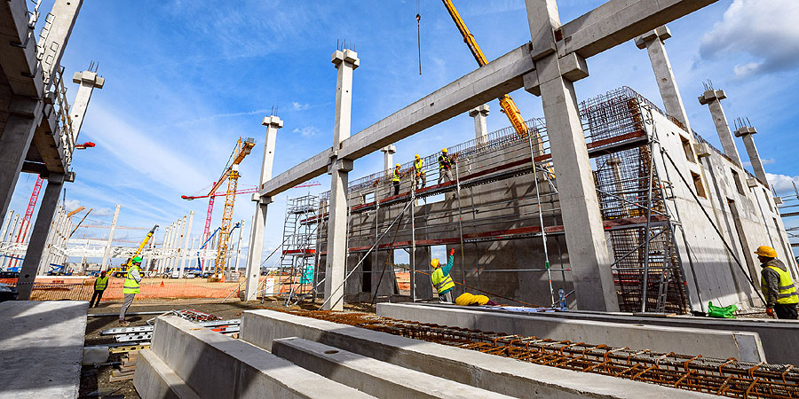

Tűz ütött ki egy debreceni panelházban
A tűzoltók nagy erőkkel vonultak a helyszínre. Időközben több mentőautó és rendőrségi jármű is megérkezett.

Papp-Kunkli Nóra, a Hajdú-Bihar Megyei Katasztrófavédelmi Igazgatóság szóvivője a Dehir.hu érdeklődésére elmondta, a nyolcadik emeleten egy villanyóraszekrény gyulladt ki, s a lángok átterjedtek az alatta lévő bútorokra.
A kilencedik és a tizedik szinten füsttel telt meg a folyosó, így azt kiszellőztették a tűzoltók, közben a lakókat arra kérték, ne hagyják el a lakásaikat.
Frissítés: A katasztrófavédelem csütörtök reggel közölte, hogy az épületet huszonkét ember hagyta el. A házat átszellőztették, a lakók ezután visszatérhettek otthonaikba. A mentőszolgálat két embert kórházba szállított.
Néhány óráig nem lesz víz Nagymacs egész területén
Október 4-én (kedden) előreláthatólag 9 órától13 óra 30-ig Nagymacs, Kastély utcából nyíló, nevet nem viselő, 0923-as helyrajzi számú út ivóvíz gerincvezeték kivitelezési munkálatai miatt a vízszolgáltatás Nagymacs egész területén szünetelni fog – közölte a Debreceni Vízmű Zrt.

A vízkimaradás miatt a felhasználók megértését kérik.
Ovisokat vezettek be az állatgondozás rejtelmeibe Debrecenben
Az állatok több szempontból is jótékony hatással vannak az életünkre. Megtanítanak a felelősségteljes viselkedésre, az önzetlen szeretetre, segíthetnek a stresszkezelésben és terápiás foglalkozások szereplői is. 1931 óta minden évben október negyedikén, Assisi Szent Ferenc halálának évfordulóján tartják az Állatok Világnapját.
A debreceni BMW-gyár építkezésén jártunk, mutatjuk, mit láttunk
Jó ütemben halad a BMW debreceni gyárának kivitelezése. A szakemberek jelenleg a központi épületet és a gyártóüzemek egy részét építik az Északnyugati Gazdasági Övezetben. A tervek szerint jövőre érkeznek a gyártósorok, 2024 őszére pedig elindulhat a próbaüzem. A debreceni gyárban olyan elektromos modelleket gyártanak majd, amelyek új fejezetet nyitnak a bajor vállalat történetében.
„Jól halad a kommunikációs központ épületének, valamint a többszintes festőüzem épületének kivitelezése, illetve hamarosan látványos szakaszba fog lépni a karosszériaüzem és az összeszerelő-gyártóüzemnek az építkezése is” - hallhattuk Szabó Dávid projektmenedzsert.
A 3,2 kilométer hosszú és 1,6 kilométer széles gyártelep teljes egészében a környezettudatosság és a fenntarthatóság jegyében épül. A létesítmények kivitelezését követően
Rendvédelmet népszerűsítő ügyességi versenyt rendezett a DHSE
Tűzoltó legyek vagy katona? Akár ezt is eldönthették a hetedikes és nyolcadikos diákok a versenyen, melynek állomásait a pallagi sportközpont területén alakították ki.
Tizennyolc háromfős csapat érkezett a Debreceni Tankerület iskoláiból. Sokféle izgalmas kihívást kellett teljesíteniük a fiúknak és a lányoknak a verseny során. Négy éve rendez ilyen közösségi programnak is szánt élményközpontú megmérettetést a honvéd sportegyesület.
Aktuális időjárás
Debrecen legfrisebb időjárását az IDŐJÁRÁS feliratra kattintva tekintheti meg.